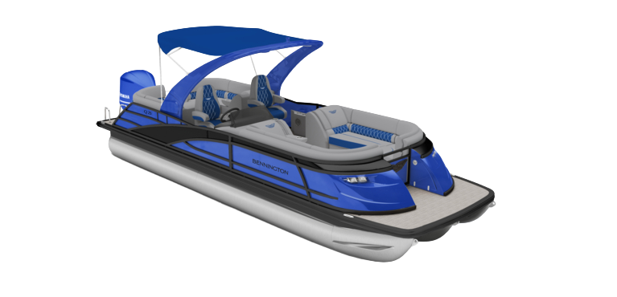

INFO
General Information
- MSRP: $258,509
- Length: 25'
- Beam: 8'6"
- Engine: Yamaha 350HP
- Floorplan: Swingback
- Exterior Main Color: Gemini Black
- Exterior Accent Color: Metallic White
- Interior Main Color: Phantom Veneto
- Interior Accent Color: Phantom
- Interior Furniture Style/Trim: Sport
What's New for 2027
2027 updates
- Cladded Arch Base: Delivers a stronger, more refined foundation for modern arch syatems, boosting durability, elevating finish quality, and giving owners long-term confidence with a design built to reduce wear and warranty worries.
- SureStep Ladder: Make every swim stop easier with the premium Sure Step, designed for comfortable boarding and easy water entry. Its sturdy, integrated design adds convenience and confidence to your time on the water.
- Bayside Blue Engine Color: A refined modern color palette to stand out in the showroom and on the water. These new hues deliver meaningful personalization while maintaining a cohesive, premium look. Ensuring every color and graphic elevates everyday use and enhances overall onboard experience.
- 6-Way Adjustable Captain/Co-Captain Chair: Power-adjustable captain and co-captain charis bring autimotive-grade comfort to the helm, letting you fine-tune your position with smooth, effortless control through the Vivid UX interface. This premium upgrade delivers superior support, and a truly elevated driving experience that feels tailored to you.
- Stage 6 Audio Package: Rockford Fosgate Stage Audio brings premium sound to your build with higher output, clearer coverage, and the unmistable punch of a true high-end system. This optional staged setup transforms your boat into an entertainment hub, giving you richer clarity, deeper bass, and the freedom to customize your audio experience so you can feel the music everytime you headout.
- NOCO Onboard Battery Charger: Stay powered all season long with a premium NOCO onboard charger that keeps your batteries ready whether you're docked for the weekend or stored for the winter. With smart, safe chargingand an easy shore power hookup, you'll emjpy longer battery life and more worry-free tome on the water. Every trip, every season.
- Dockease Camera Delivers a dedicated low-speed vantage point that transforms tight-quarters maneuvering into a smooth, stress-free experience. By giving you clear, real time visibility where other mid-teir pontoons still leave you guessing, it becomes a true ease-of-use differentiator helping every arrival feel controlled, confident, and effortlessly precise.